Твой рабочий стол — поле битвы.
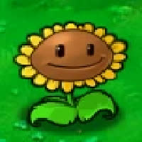
Стоимость: 50 ☀
Производит солнца каждые 6–9 секунд. Основа экономики. Не работает ночью.
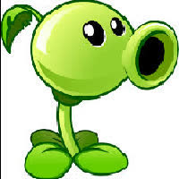
Стоимость: 75 ☀
Стреляет горошинами по зомби. 1 горошина = 1 урон.
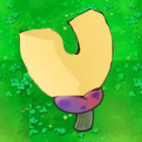
Стоимость: 75 ☀
Притягивает системные файлы с систем-зомби в радиусе 3 клеток. Спасает от BSOD!
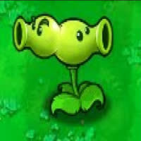
Стоимость: 125 ☀
Стреляет горошинами в обе стороны — и вправо, и влево!
Стоимость: 150 ☀
Взрывается через 3 сек. Уничтожает всё в радиусе 5x5. Оставляет пиксельные артефакты.
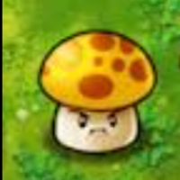
Стоимость: 25 ☀
Дешёвый заменитель подсолнуха. Работает только ночью. Производит 15 ☀.
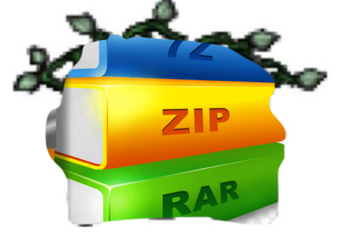
Стоимость: 50 ☀
Снимает архивацию с растений, заражённых WinRAR-зомби. Не сажается — применяется на растение.
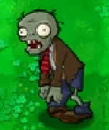
ХП: 5–7
Обычный зомби. Передвигается с помощью Курсика.

ХП: 5–7
Дубликат обычного зомби.
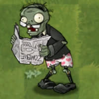
ХП: 5–7 | Файл: 4 попадания
Несёт системный файл. Если файл уничтожен горошинами — BSOD! Используйте Папку-магнит.
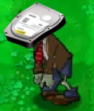
ХП: 10–12 | Броня: 3 попадания
Медленный и толстый. HDD-броня поглощает первые 3 удара, потом становится обычным.
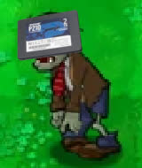
ХП: 3–5 | Броня: 2 попадания
Быстрый, но хрупкий. SSD-броня поглощает 2 удара.
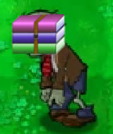
ХП: 5–7
Архивирует растения за 2 сек. Заархивированные растения не работают. Используйте Разархиватор!
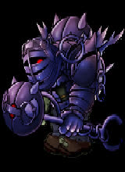
ХП: ∞
Финальный босс. Появляется в конце игры. Неуязвим.
| Перетащить иконку | Посадить растение на клетку рабочего стола |
| ПКМ на клетке | Посадить выбранное / убрать растение |
| ESC | Меню паузы |
| ~ | Панель разработчика (если включена в настройках) |
| Колёсико мыши | Прокрутка меню растений |
Верхняя панель — выбор растений и количество солнц.
Косилки — стоят в начале каждого ряда. При касании зомби мчатся вперёд и сносят всё на своём пути.
Курсик — ваш помощник с инвертированными цветами. Он перетаскивает зомби и помогает при обучении.
Ночной режим — подсолнухи не работают, вместо них — солнце-грибы. Переключается в настройках.
Зомби проник в систему. Все файлы рабочего стола повреждены.
Мы собираем данные об ошибке и восстанавливаем рабочий стол...
0% выполнено